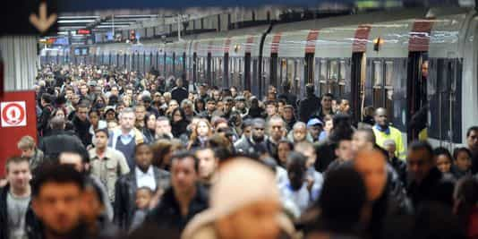

< < < Back
4 Ways Immigration Changed My Native Community – Return Of Kings
I recently visited my family for Christmas. Apart from the joy of seeing them, going back to France is not something I look forward to anymore, since the veil of media and government lies has been removed from my eyes.
I observed noticeable demographic and physical changes in the city where I studied (third tier city), due to recent pro-migrant stance of the government adding to the earlier problems caused by post-colonisation immigration, between my arrival (mid 2000s) to the present year.
I strolled around for a few days taking mental notes and will share now my observations, to confirm what most of us already know and what the skeptics still refuse to acknowledge. Simply put: We are being replaced. It is affecting us all and it is very real.
1. Destruction of native habitat
Migrants set one of the oldest buildings of the city (where they were squatting) on fire this summer. This was the second place they burnt down this year. Churches were deserted and were falling into ruins or are downright destroyed by the government that deems them a waste of space, being too busy courting the Saudi and other radical regimes that fund French mosques.
With the pauperisation of of the native population, locals food shops (butchers especially) close down. Their quality products have become a luxury and many choose to shop at globalist-friendly supermarkets. Kebab shops and halal butchers now pop up at every corner with the stench of putrefied mutton invading the street.
Native species thrive in balanced ecosystems. But sometimes, a handful of people decide to introduce alien species in an environment that has not been exposed so far, regardless of consequences. The new specimens take over the resources of the natives. If they do not overcome the aggressor, the newly arrived eventually breed them out.
Take the example of mainland Australia after the introduction of the cane toad. The animal served its purpose at first but having no natural predators, it proliferated until becoming a pest, destroying the balance of the local ecosystem. Just like the government introducing migrants to divide the population until they get out of hand and destroy society as we know it.
2. Natives are less visible

Public transportation is always a good barometer when it comes to social fabric. It became quickly obvious that there were less natives than in the past.
Hopping on the bus, the only language I heard was ghetto French or Arabic. (This is not in Paris. This is in a third tier city, in one of the most conservative and rural regions in the country.) My mother, noticing the incredulous gaze I gave to the passengers in traditional Muslim garb, read my thoughts. “I don’t have the impression of being in France anymore,” she said.
I observed a higher percentage of native beta males with low quality non-white women and young, pretty native women with gangster-looking non-native men, sometimes with the assorted progeny. Single beta men cast glances at both situations with envy, before looking back at their shoes or their phone. If there were more alpha men, this would not happen. Women being women, they choose thrills and practicality over loyalty.
3. Replacement by a faster growth
Another phenomenon I noticed is a reduced number of native women with babies in the street, whereas Arab and African women (in pairs usually) often blocked the entire sidewalk with one or two buggies. The majority of native women under 30 that I saw were without children and if they had any, they were usually approaching the wall or with a single child.
Having been in a few night venues, the rising number of sausage fests around town, droves of non-native men grinding in single file on the same 6 and reduced number of attractive young women overall clearly differed from my freshman years.
4. Inaction of native men

The guys are demoralized. I rarely crossed a happy native man. Almost all of them are sighing constantly and dragging their feet to the sounds of “It’s the crisis,” “My job is killing me,” or “I am back with the so-so girlfriend that barks at me but at least i am not alone.” I read a newspaper article where a university acquaintance was virtue-signalling his weekends spent helping the migrants settle in a village with less than 100 mostly retired inhabitants.
The train station of my city has constantly a dozen of migrants sleeping inside it, plus the ones coming and going towards Paris and larger cities. The cops pass next to them as if they were part of the landscape, but take away the odd native hobo that sleeps near the railtracks.
Taking my train after purchasing a 30 euros ticket, I noticed a group of 6 young Afghans at the end of the carriage. The train guard came along and controlled everyone in the carriage. Reaching the Afghans, he looked at them and went his way, not checking the tickets that they obviously did not have.
I learnt later that the SNCF (state-owned national rail agency) sent directives stipulating that all the migrants (predominantly Muslim) can travel on their trains for free, which is nothing less than a reversed “jizyah” (the tax imposed to Christians in Muslim societies if they want to live in peace).
Allons nous nous laisser faire?

The present leftist French population being beyond the point of salvation, we can only focus on the next generation of men if we want to preserve our culture. The goal would be to tackle the general laziness and pusiyfication of our society in order to create richer and stronger (mentally and physically) men.
January 2017, To the past, or to the future. To an age when thought could be free. From the time of Big Government, from the Age of Political Correctness, from an angry man… greetings.
Read More: The Truth About Multiculturalism And Third-World Immigration